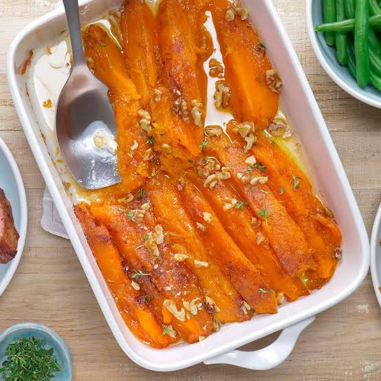

Sweet Yams

Description
"These flavorful candied yams are perfect for holiday gatherings." -allrecipes.com
Ingredients
- 3 tablespoons kosher salt
- 2 quarts cold water
- 3 pounds orange-fleshed sweet potatoes, peeled and cut into 2-inch pieces
- 1 cup brown sugar
- 4 tablespoons unsalted butter
- ½ cup freshly squeezed lemon juice
- ¼ cup maple syrup
- ½ teaspoon ground ginger
- ¼ teaspoon ground cinnamon
- 1 pinch cayenne pepper
- Salt to taste
- Chopped pistachios, pecans, or walnuts for garnish
Steps
- Stir salt into 2 quarts of cold water in a large pot. Transfer sweet potato pieces to the pot and place over high heat; bring to a simmer. Reduce heat to medium-low and simmer until potatoes are not quite tender but still cooked, 5 to 7 minutes. Use the tip of a knife to test for doneness. Drain.
- Place brown sugar, butter, lemon juice, maple syrup, ginger, cinnamon, cayenne, and pinch of salt in a skillet. Place over medium-high heat, stirring until glaze ingredients melt and start bubbling. Continue cooking, stirring occasionally, until mixture begins to thicken, 4 to 6 minutes.
- Transfer drained sweet potatoes to a skillet. Increase heat to high; cook and stir until potatoes are coated with glaze and very tender, and glaze has thickened, 5 to 8 minutes. Transfer to serving dish; garnish with chopped nuts.
Home